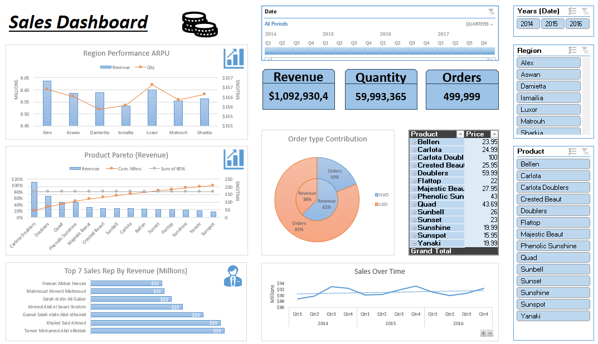

Explore dashboard ↗
Explore dashboard ↗01 / Power BI · TRAINING PROJECT
Arla Sales Dashboard
Sales, target achievement & returns.
KEY FINDING
Actual volume is 102.3% of target.
SAR 346,280,640.65Sales
11,012,403.68 kgActual volume
102.3%Target achievement
EBRAHEM AWAD · ABHA, SAUDI ARABIA
EXCEL / POWER BI / BUSINESS REPORTING
Sales experience, clear dashboards and practical analysis. Explore four projects covering sales performance, delivery and profitability.
01 / SELECTED WORK
Two Excel projects. Two Power BI projects.
Explore the dashboard, analysis and report for each.
Explore dashboard ↗Sales, target achievement & returns.
Actual volume is 102.3% of target.

Explore dashboard ↗Large transaction dataset, product Pareto & regional comparison.
19.0% of records contributes 62.5% of net sales.
 Explore dashboard ↗
Explore dashboard ↗Supplier contribution, margin quality & monthly trends.
The largest supplier contributes 52.9% of revenue.
 Explore dashboard ↗
Explore dashboard ↗Sales channels, product mix & delivery performance.
65.0% of sales comes from Homzmart.
02 / DEMONSTRATED SKILLS
Tools matter most when they answer
a business question clearly.
Use advanced formulas, Power Pivot and Power Query cleaning automation to prepare data and build useful reports.
See Excel in action ↗Connect overview KPIs to trends, hierarchies and meaningful performance breakdowns.
See Power BI in action ↗Explain contributors, compare performance and turn findings into practical next steps.
Explore the findings ↗03 / ABOUT ME
Sales and customer service experience. A growing focus on analytics.
My experience spans Arla Foods KSA, Etisalat Misr, Vodafone Egypt and Xceed. At Arla, I manage more than 30 customer accounts, consistently exceed 110% of monthly sales targets and analyze daily sales performance.
I initiated a team sales report to simplify sales figures and help colleagues monitor KPIs. I hold a Bachelor of Commerce from Mansoura University, with training through Eyouth Learning and Mazen Analytics, and I am continuing the Google Data Analytics Professional Certificate.
04 / THE APPROACH
Start with the business question and the decision the report should support.
Review fields, calculations and missing values before interpreting results.
Choose KPIs and comparisons that make the answer easier to see.
Document findings, recommended actions and the limits of the evidence.
05 / CONTINUING DEVELOPMENT
Google analytics courses, plus training
through Eyouth Learning and Mazen Analytics.
The role of data, analytical thinking and the data analysis process.
Business questions, stakeholder needs and decision-making.
Data collection, organization and preparation for analysis.
Data quality, cleaning and preparation of usable datasets.
MAZEN ANALYTICS / DATA ANALYSIS DIPLOMA COURSEWORK
The Google Data Analytics Professional Certificate is in progress; the four Google courses above are individually completed.
View training details ↗TAKE A CLOSER LOOK
Explore the case studies or download all four projects in one portfolio.
Download full portfolio ↓06 / GET IN TOUCH
Sales experience, analytical curiosity,
and a focus on clear business reporting.